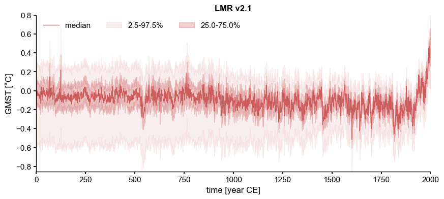
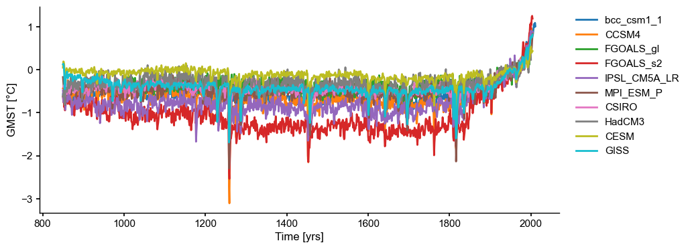
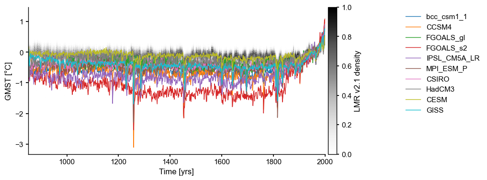
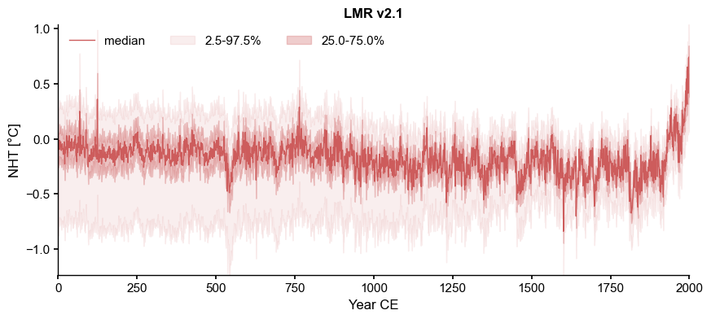
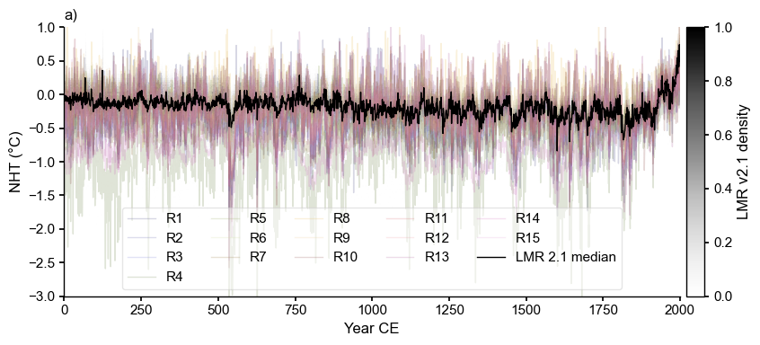
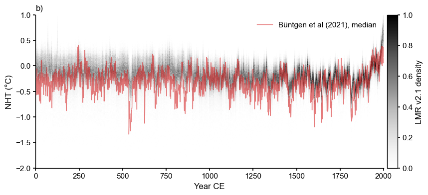
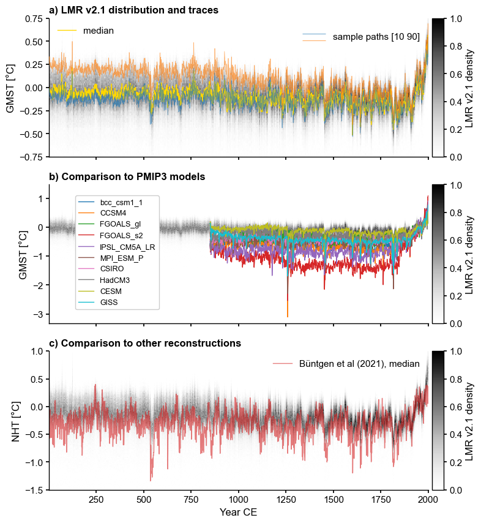
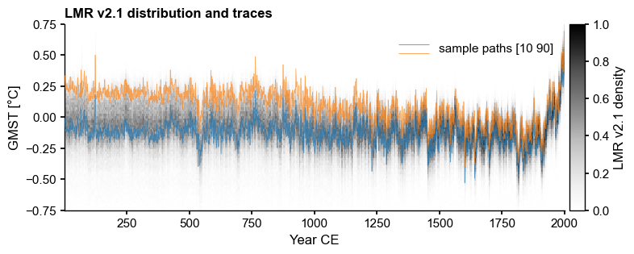

[Fig. 1] Motivation for the study#
Reproduces Fig 1 of the paper
[1]:
%load_ext autoreload
%autoreload 2
import pens
import pandas as pd
import numpy as np
import xarray as xr
import pyleoclim as pyleo
import matplotlib.pyplot as plt
plt.style.use('default')
pens.set_style('journal_nogrid')
1. Reconstructions vs simulations#
[2]:
path = '../data/gmt_MCruns_ensemble_full_LMRv2.1.nc'
LMR = pens.EnsembleTS().load_nc(path, var='gmt')
LMR.label = 'LMR v2.1'
LMR.value_name = 'GMST'
LMR.value_unit = '\N{DEGREE SIGN}C'
LMR.time_unit = 'year CE'
LMR.plot_qs()
[2]:
(<Figure size 1000x400 with 1 Axes>,
<Axes: title={'center': 'LMR v2.1'}, xlabel='time [year CE]', ylabel='GMST [°C]'>)

[3]:
df = pd.read_table('../data/PMIP3_GMST.txt')
# create a new pandas.DataFrame to store the processed data
dfn = df.copy()
# remove the data columns for CESM and GISS ensemble members
for i in range(10):
dfn = dfn.drop([f'CESM_member_{i+1}'], axis=1)
dfn = dfn.drop(['GISS-E2-R_r1i1p127.1'], axis=1)
dfn = dfn.drop(['GISS-E2-R_r1i1p127'], axis=1)
dfn = dfn.drop(['GISS-E2-R_r1i1p121'], axis=1)
# calculate the ensemble mean for CESM and GISS, and add the results into the table
dfn['CESM'] = df[[
'CESM_member_1',
'CESM_member_2',
'CESM_member_3',
'CESM_member_4',
'CESM_member_5',
'CESM_member_6',
'CESM_member_7',
'CESM_member_8',
'CESM_member_9',
'CESM_member_10',
]].mean(axis=1)
dfn['GISS'] = df[[
'GISS-E2-R_r1i1p127.1',
'GISS-E2-R_r1i1p127',
'GISS-E2-R_r1i1p121',
]].mean(axis=1)
# display the processed data
dfn
[3]:
| Year | bcc_csm1_1 | CCSM4 | FGOALS_gl | FGOALS_s2 | IPSL_CM5A_LR | MPI_ESM_P | CSIRO | HadCM3 | CESM | GISS | |
|---|---|---|---|---|---|---|---|---|---|---|---|
| 0 | 850 | -0.570693 | -0.431830 | NaN | -0.620995 | -0.475963 | -0.170230 | NaN | -0.620517 | 0.049553 | 0.127429 |
| 1 | 851 | -0.698903 | -0.411177 | NaN | -0.753160 | -0.742970 | -0.303124 | -0.398695 | -0.553043 | 0.193858 | 0.138796 |
| 2 | 852 | -0.575440 | -0.404802 | NaN | -0.743508 | -0.758939 | -0.422623 | -0.406343 | -0.560791 | 0.185033 | 0.098170 |
| 3 | 853 | -0.724757 | -0.552719 | NaN | -0.869331 | -0.746460 | -0.335177 | -0.353557 | -0.438949 | 0.120470 | -0.054552 |
| 4 | 854 | -0.724328 | -0.734938 | NaN | -0.826238 | -0.684093 | -0.650792 | -0.416140 | -0.812194 | -0.081349 | -0.407169 |
| ... | ... | ... | ... | ... | ... | ... | ... | ... | ... | ... | ... |
| 1161 | 2011 | 1.013544 | NaN | NaN | NaN | NaN | NaN | NaN | NaN | NaN | NaN |
| 1162 | 2012 | NaN | NaN | NaN | NaN | NaN | NaN | NaN | NaN | NaN | NaN |
| 1163 | 2013 | NaN | NaN | NaN | NaN | NaN | NaN | NaN | NaN | NaN | NaN |
| 1164 | 2014 | NaN | NaN | NaN | NaN | NaN | NaN | NaN | NaN | NaN | NaN |
| 1165 | 2015 | NaN | NaN | NaN | NaN | NaN | NaN | NaN | NaN | NaN | NaN |
1166 rows × 11 columns
[4]:
# store each pyleoclim.Series() object into a dictionary and plot
ts_dict = {}
for name in dfn.columns[1:]:
ts_dict[name] = pyleo.Series(
time=dfn['Year'].values, # the time axis
value=dfn[name].values, # the value axis
label=name, # optional metadata: the nickname of the series
time_name='Time', # optional metadata: the name of the time axis
time_unit='yrs', # optional metadata: the unit of the time axis
value_name='GMST', # optional metadata: the name of the value axis
value_unit='\N{DEGREE SIGN}C', # optional metadata: the unit of the value axis
verbose=False)
ts_list = [v for k, v in ts_dict.items()] # a pythonic way to convert the pyleo.Series items in the dictionary to a list
ms_pmip = pyleo.MultipleSeries(ts_list)
fig, ax = ms_pmip.plot(lgd_kwargs={
'bbox_to_anchor': (1.25, 1), # move the legend to the right side
})

[5]:
fig, ax = LMR.line_density(figsize=(8,4),xlim=(850,2000))
ms_pmip.plot(lgd_kwargs={'bbox_to_anchor': (1.25, 1)}, ax=ax, linewidth=1)
[5]:
<Axes: xlabel='Time [yrs]', ylabel='GMST [°C]'>

2. Comparing reconstructions#
[6]:
path = '../data/nhmt_MCruns_ensemble_full_LMRv2.1.nc'
LMR_nht = pens.EnsembleTS().load_nc(path, var='nhmt')
LMR_nht.label = 'LMR v2.1'
LMR_nht.time_name = 'Year CE'
LMR_nht.plot_qs(ylabel='NHT [\N{DEGREE SIGN}C]')
[6]:
(<Figure size 1000x400 with 1 Axes>,
<Axes: title={'center': 'LMR v2.1'}, xlabel='Year CE', ylabel='NHT [°C]'>)

Now load the data from NOAA file:
[7]:
path = '../data/buentgen2021recon.txt'
df = pd.read_csv(path,skiprows=115,delimiter='\t')
df.head()
[7]:
| YearCE | R1 | R2 | R3 | R4 | R5 | R6 | R7 | R8 | R9 | R10 | R11 | R12 | R13 | R14 | R15 | Rmean | Rmed | |
|---|---|---|---|---|---|---|---|---|---|---|---|---|---|---|---|---|---|---|
| 0 | 1 | -0.669554 | -0.303244 | -0.467243 | -1.314425 | -0.370 | -0.573300 | -0.685931 | 0.00 | -0.225631 | -0.379775 | -0.435605 | NaN | -0.355480 | -0.862583 | -0.430486 | -0.505233 | -0.433045 |
| 1 | 2 | -0.448115 | -0.532993 | -0.556450 | -1.058694 | -0.219 | -0.408151 | -0.787994 | -0.01 | -0.217959 | 0.194776 | -0.196139 | NaN | -0.534690 | -0.920016 | 0.068531 | -0.401921 | -0.428133 |
| 2 | 3 | -0.519438 | -0.488938 | -0.572936 | -1.226653 | -0.154 | -0.455268 | -0.824891 | -0.15 | -0.326339 | -0.144989 | -0.299773 | NaN | -0.628520 | -0.793734 | -0.085305 | -0.476485 | -0.472103 |
| 3 | 4 | -0.231091 | -0.312583 | -0.505674 | -1.496090 | -0.107 | -0.382701 | -0.723426 | -0.03 | -0.181019 | 0.031611 | -0.250385 | NaN | -0.006623 | -1.092359 | 0.024871 | -0.375891 | -0.240738 |
| 4 | 5 | -0.585517 | -0.314294 | -0.558424 | -1.038842 | -0.080 | -0.566686 | -0.641757 | -0.20 | 0.035370 | -0.014277 | -0.241596 | NaN | -0.102210 | -0.967983 | -0.651108 | -0.423380 | -0.436359 |
[8]:
fs = (8,4)
fig, ax = LMR_nht.line_density(ylabel='NHT (\N{DEGREE SIGN}C)',label='LMR 2.1', figsize=fs)
cols = df.columns[1:16]
clr = plt.cm.tab20b(np.linspace(0,1,len(cols))) # define colors
for i, col in enumerate(cols):
ax.plot(df['YearCE'],df[col],lw=1,alpha=0.2,color=clr[i],label=col)
LMR_nht.get_median().plot(color='black', linewidth=1, label = 'LMR 2.1 median', ax=ax)
ax.set_ylim(-3, 1)
ax.set_ylabel('NHT (\N{DEGREE SIGN}C)')
ax.legend(ncol=5, frameon=True, framealpha=0.5)
ax.set_title("a)",loc='left')
plt.tight_layout()
#fig.savefig('../figures/nht_comparison_spaghetti.pdf')

[9]:
fig, ax = LMR_nht.line_density(ylabel='NHT (\N{DEGREE SIGN}C)',label='LMR 2.1')
ax.plot(df['YearCE'],df['Rmed'],lw=1,alpha=0.6,color='tab:red',label='Büntgen et al (2021), median')
ax.set_ylim(-2, 1)
ax.legend()
ax.set_title("b)",loc='left')
fig.set_size_inches(9,4)
#fig.savefig('../figures/nht_comparison_density.pdf')

Assembling Figure 1#
[10]:
_ , ylabel = LMR.make_labels()
xlabel = 'Year CE'
fig, axs = plt.subplots(3,1,figsize = (8,10),sharex=True)
# panel a
LMR.line_density(ax=axs[0],ylim=[-.75,.75])
LMR.get_median().plot(color='gold',label='median',ax=axs[0])
lgd1 = axs[0].legend(ncol=2, loc='upper left')
axs[0].add_artist(lgd1)
LMR.plot_traces(ax=axs[0], indices = [9,89], alpha=0.65,
xlabel = '', ylabel=ylabel, xlim=[1,2000])
axs[0].set_title('a) ' + LMR.label + ' distribution and traces',
fontweight='bold', loc='left')
# panel b
LMR.line_density(ax=axs[1]) #xlim=(850,2000)
ms_pmip.plot(ax=axs[1], linewidth=1, xlabel = '', lgd_kwargs=
{'bbox_to_anchor': (0.3, 0.95), 'frameon':True,
'framealpha':1.0, 'fontsize':9})
axs[1].set_title('b) Comparison to PMIP3 models', fontweight='bold', loc='left')
# panel c
LMR_nht.line_density(ax=axs[2],ylabel='NHT [\N{DEGREE SIGN}C]',label='LMR 2.1')
axs[2].plot(df['YearCE'],df['Rmed'],lw=1,alpha=0.6,color='tab:red',label='Büntgen et al (2021), median')
axs[2].set_ylim(-1.5, 1)
axs[2].legend()
axs[2].set_title('c) Comparison to other reconstructions', fontweight='bold', loc='left')
[10]:
Text(0.0, 1.0, 'c) Comparison to other reconstructions')

[11]:
fig.savefig('../figures/Fig1_motivation.pdf',dpi=300)
Let’s export the top panel for inclusion in presentations:
[12]:
fig_a, ax = plt.subplots(1,1,figsize = (8,3))
LMR.line_density(ax=ax,ylim=[-.75,.75])
LMR.plot_traces(ax=ax, indices = [9,89], alpha=0.65, xlim=[1,2000])
ax.set_title(LMR.label + ' distribution and traces',
fontweight='bold', loc='left')
ax.set_xlabel(xlabel)
[12]:
Text(0.5, 0, 'Year CE')

NB: indices are NOT quantiles. This particular example is somewhat of a fluke.